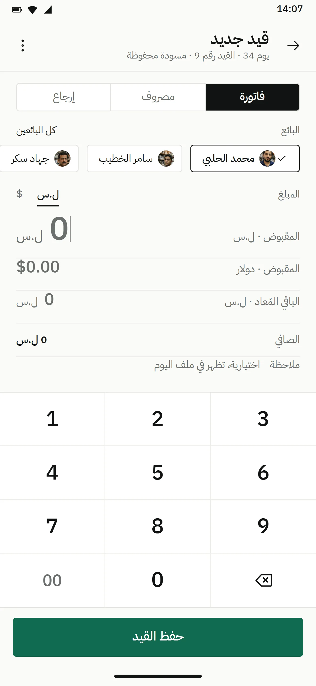
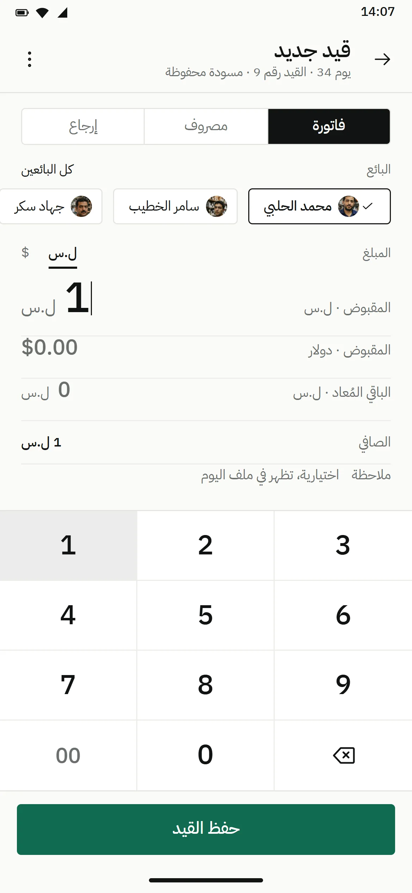
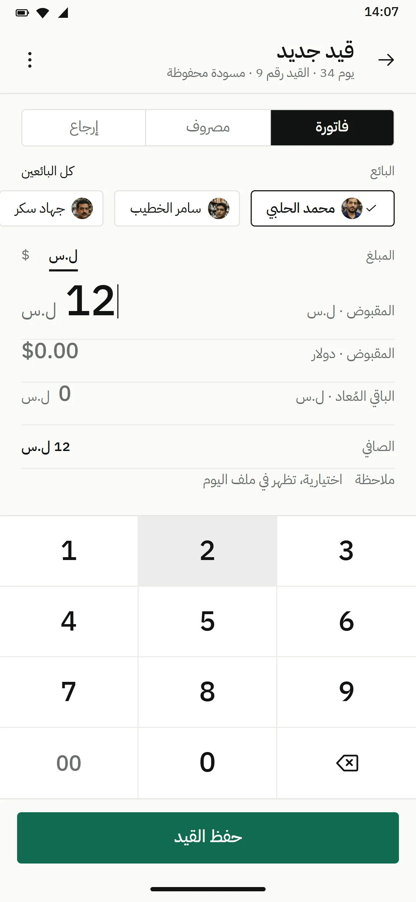
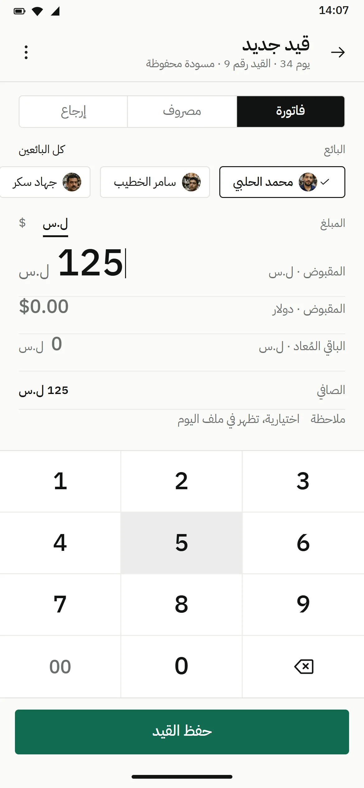
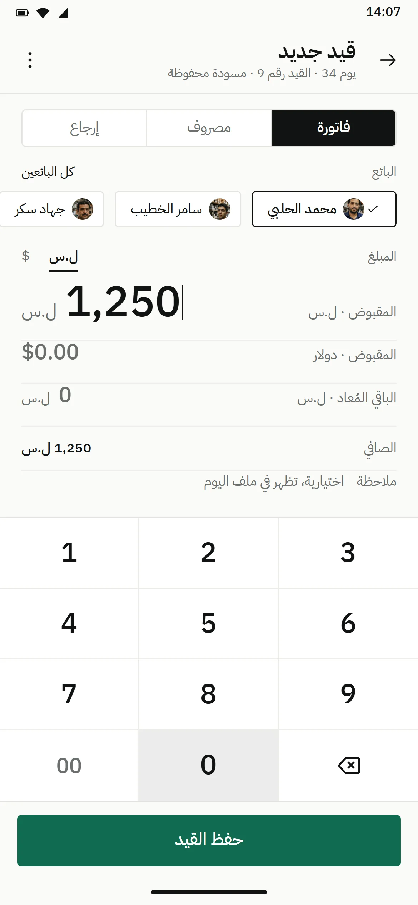
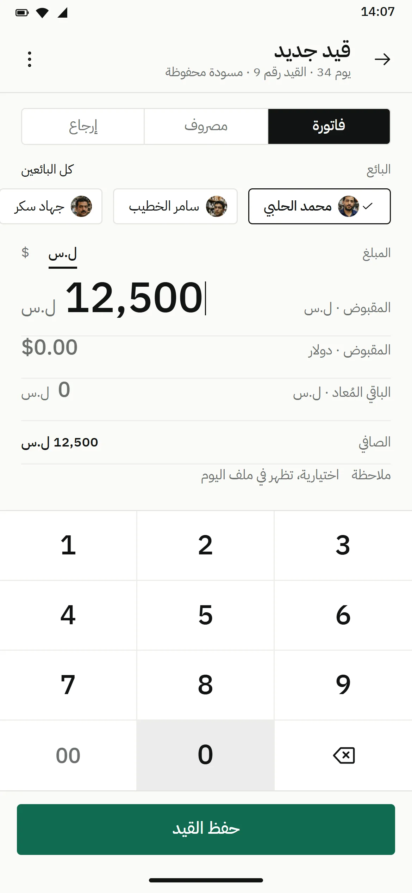
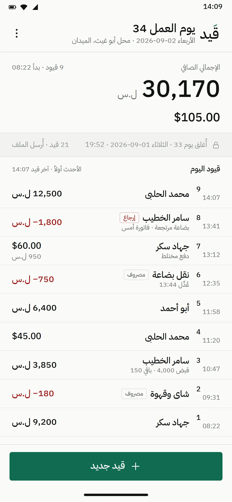
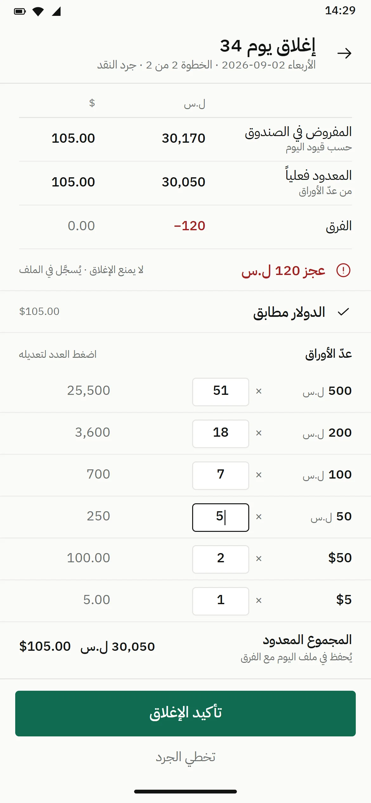
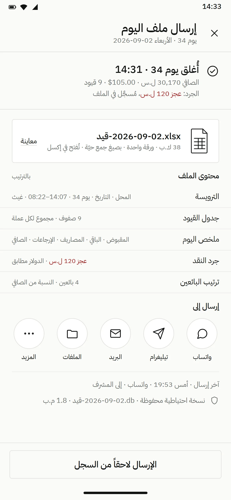
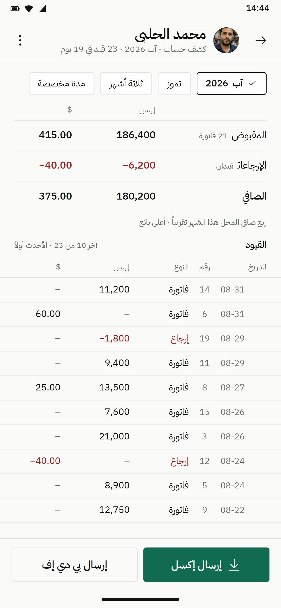

الفصل التاسع · قَيد
قَيد QAYD
قَيد. دفتر كاشير على الهاتف، مستخدم واحد، ولا مكان لرقم غلط.







الحركة الأولى · الرقم يُكتب
فاتورة · محمد الحلبي · 12,500 ل.س · 14:07
- النوعفاتورة
- البائعمحمد الحلبي
- المبلغ12,500
- حفظ14:07
-
01 · 14:07 · القيد 9
فاتورة، محمد الحلبي. الكاشير يكتب ما استلمه.
-
02 · لوحة الأرقام
رقماً رقماً. ليرات كاملة، أرقام جدولية، ولا تقريب.
-
03 · 12,500
اثنا عشر ألفاً وخمسمئة. سطر الدولار يبقى صفراً؛ لا شيء يُحوَّل أبداً.
-
04 · حُفظ · 14:07
حُفظ في 14:07: القيد التاسع في رأس اليوم، وصافي اليوم يقول 30,170.
القصة
دفتر أندرويد عربي لكاشير محل واحد في دمشق: كل فاتورة ومصروف وإرجاع يُكتب لحظة حدوثه، عملتان لا تُحوَّلان، واليوم يُختم عند الإقفال وملف إكسل واحد يذهب للمشرف.
عن المنتج
قَيد تطبيق أندرويد عربي لكاشير محل واحد في دمشق: كل فاتورة ومصروف وإرجاع يُكتب لحظة حدوثه، بالليرة والدولار جنباً إلى جنب من دون تحويل؛ وعند الإقفال يعدّ الدرج ويختم اليوم ويرسل ملف إكسل واحداً للمشرف. بلا خادم ولا إنترنت، ونسخة احتياطية تنجو من إلغاء التثبيت.
التحدي
- 01
مستخدم واحد لا يتسامح: أسوأ نتيجة رقم غلط، فكل شاشة دفتر أولاً، والمال ليرات كاملة وسنتات، لا كسور عائمة.
- 02
عملتان بلا سعر صرف: على التطبيق ألا يجمعهما ولا يحوّلهما أبداً.
- 03
هاتف يموت وسط القيد: على المسودة أن تصمد أمام الانقطاع وعلى اليوم أن يصمد أمام القتل القسري.
المنهج
كوتلن وكومبوز بنموذج مال بالأعداد الصحيحة فقط، معاملات تُكتب عند الحفظ على إس كيو لايت بوضع سجلّ الكتابة المسبقة ومزامنة كاملة، طابور مسودات متسلسل، لقطات يومية في مستندات الهاتف، سجلّ تدقيق يُضاف إليه فقط، وكاتب إكسل بلا مكتبات يضع صيغاً حيّة في ملف المشرف.
دوري
مالك المنتج والمصمّم والمهندس الوحيد، لمستخدم حقيقي واحد: مقابلة المتطلبات، نظام التصميم، التطبيق، كاتب إكسل، والإصدار.
الحركة الثانية · اليوم يُختم
اليوم يُختم
في 14:29 يُعدّ الدرج: المفروض 30,170 والمعدود 30,050. الفرق عجز 120 ليرة، والدولار مطابق. يسجّل قَيد العجز في ملف اليوم ويختم اليوم على حاله؛ فالعدّ الناقص ليس باباً مقفلاً.

عجز 120 ل.س، مسجَّل لا ممنوع
الدولار مطابق، والليرة ناقصة 120
مستخدم واحد. ولا تسامح مع رقم غلط.
| A | B | C | D | E | F | |
|---|---|---|---|---|---|---|
| 1 | قَيد · محل أبو غيث للأدوات الكهربائية · الميدان | |||||
| 2 | يوم 34 · الأربعاء 2026-09-02 · غيث | |||||
| 3 | # | الوقت | البائع | النوع | ل.س | $ |
| 4 | 1 | 08:22 | جهاد سكر | فاتورة | 9,200 | |
| 5 | 2 | 09:31 | شاي وقهوة | مصروف | −180 | |
| 6 | 3 | 10:47 | سامر الخطيب | فاتورة | 3,850 | |
| 7 | 4 | 11:20 | محمد الحلبي | فاتورة | 45.00 | |
| 8 | 5 | 11:58 | أبو أحمد | فاتورة | 6,400 | |
| 9 | 6 | 12:35 | نقل بضاعة | مصروف | −750 | |
| 10 | 7 | 13:12 | جهاد سكر | فاتورة | 950 | 60.00 |
| 11 | 8 | 13:41 | سامر الخطيب | إرجاع | −1,800 | |
| 12 | 9 | 14:07 | محمد الحلبي | فاتورة | 12,500 | |
| 13 | الصافي | =SUM(E4:E12)30,170 | =SUM(F4:F12)105.00 | |||
قيد-2026-09-02.xlsx · ورقة واحدة، صيغ حيّة، بلا مكتبات
الحركة الثالثة · ما يخرج من الهاتف
ما يخرج من الهاتف
شيئان يخرجان من الهاتف: ملف إكسل لليوم، 38 ك.ب بصيغ حيّة، أُرسل للمشرف في 14:33؛ وكشف حساب بائع، محمد الحلبي في آب، ربع صافي الشهر، إكسل أو بي دي إف.

38 ك.ب، أُرسل للمشرف 14:33

محمد الحلبي، آب: ربع الشهر
النتائج
عملتان جنباً إلى جنب، بلا تحويل
الليرة والدولار، لكلٍّ عموده
ملف واحد عند الإقفال، إكسل المشرف
صيغ حيّة، يُفتح في أي مكان
يوماً حتى الآن، دفتر واحد
منذ 26 تموز، والجمعة عطلة
الفصل التاسع · اكتمل
حقل الفصل التالي يغمر الشاشة